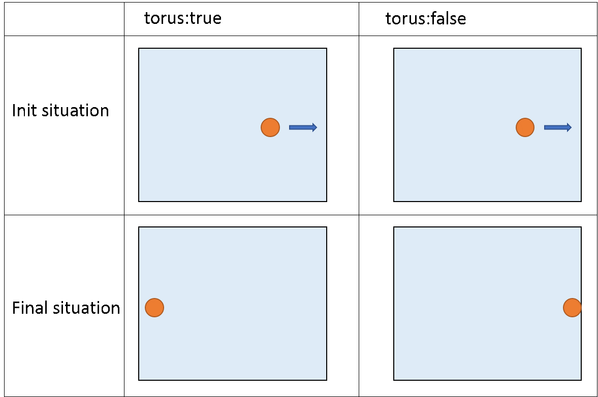

The global species
We will start this chapter by studying a special species: the global species. In the global species you can define the attributes, actions and behaviors that describe the world agent. There is one unique world agent per simulation: it is this agent that is created when a user runs an experiment and that initializes the simulation through its init scope. The global species is a species like other and can be manipulated as them. In addition, the global species automatically inherits from several of built-in variables and actions. Note that a specificity of the global species is that all its attributes can be referred by all agents of the simulation.
Index
Declaration
A GAMA model contains a unique global section that defines the global species.
global {
// definition of global attributes, actions, behaviours
}
global can use facets, such as the torus facet, to make the environment a torus or not (if it is a torus, all the agents going out of the environment will appear in the other side. If it's not, the agents won't be able to go out of the environment). By default, the environment is not a torus.

global torus:true {
// definition of global attributes, actions, behaviours
}
Other facets such as control or schedules are also available, but we will explain them later.
Directly in the global scope, you have to declare all your global attributes (can be seen as "static members" in Java or C++). To declare them, proceed exactly as for declaring basic variables. Those attributes are accessible wherever you want inside the species scope.
Environment size
In the global context, you have to define a size and a shape for your environment. In fact, an attribute already exists for the global species: it's called shape, and its type is a geometry. By default, shape is equal to a 100m*100m square. You can change the geometry of the shape by affecting another value:
geometry shape <- circle(50#mm);
geometry shape <- rectangle(10#m,20#m);
geometry shape <- polygon([{1°m,2°m},{3°m,50°cm},{3.4°m,60°dm}]);
nb: there are just examples. Try to avoid mixing dimensions! If no dimensions are specify, it'll be meter by default.
Built-in attributes
Some attributes exist by default for the global species. The attribute shape is one of them (refers to the shape of the environment). Here is the list of the other built-in attributes:
Like the other attributes of the global species, global built-in attributes can be accessed (and sometimes modified) by the world agent and every other agents in the model.
world
- represents the sole instance of the model species (i.e. the one defined in the
globalsection). It is accessible from everywhere (including experiments) and gives access to built-in or user-defined global attributes and actions.
cycle
- integer, read-only, designates the (integer) number of executions of the simulation cycles. Note that the first cycle is the cycle with number 0.
To learn more about time, please read the recipe about dates.
step
- float, is the length, in model time, of an interval between two cycles, in seconds. Its default value is 1 (second). Each turn, the value of time is incremented by the value of step. The definition of step must be coherent with that of the agents' variables like speed. The use of time unit is particularly relevant for its definition.
To learn more about time, please read the recipe about dates.
global {
...
float step <- 10°h;
...
}
time
- float, read-only, represents the current simulated time in seconds (the default unit). It is time in the model time. Begins at zero. Basically, we have: time = cycle
*step .
global {
...
int nb_minutes function: { int(time / 60)};
...
}
To learn more about time, please read the recipe about dates.
duration
- string, read-only, represents the value that is equal to the duration in real machine time of the last cycle.
total_duration
- string, read-only, represents the sum of duration since the beginning of the simulation.
average_duration
- string, read-only, represents the average of duration since the beginning of the simulation.
machine_time
- float, read-only, represents the current machine time in milliseconds.
agents
- list, read-only, returns a list of all the agents of the model that are considered as "active" (i.e. all the agents with behaviors, excluding the places). Note that obtaining this list can be quite time consuming, as the world has to go through all the species and get their agents before assembling the result. For instance, instead of writing something like:
ask agents of_species my_species {
...
}
one would prefer to write (which is much faster):
ask my_species {
...
}
Note that any agent has the agents attribute, representing the agents it contains. So to get all the agents of the simulation, we need to access the agents of the world using: world.agents.
Built-in Actions
The global species is provided with two specific actions.
halt
- stops the simulation.
global {
...
reflex halting when: empty (agents) {
do halt;
}
}
pause
- pauses the simulation, which can then be continued by the user.
global {
...
reflex toto when: time = 100 {
do pause;
}
}
The init statement
After declaring all the global attributes and defining your environment size, you can define an initial state (before launching the simulation). Here, you normally initialize your global variables, and you instantiate your species. We will see in the next session how to initialize a regular species.